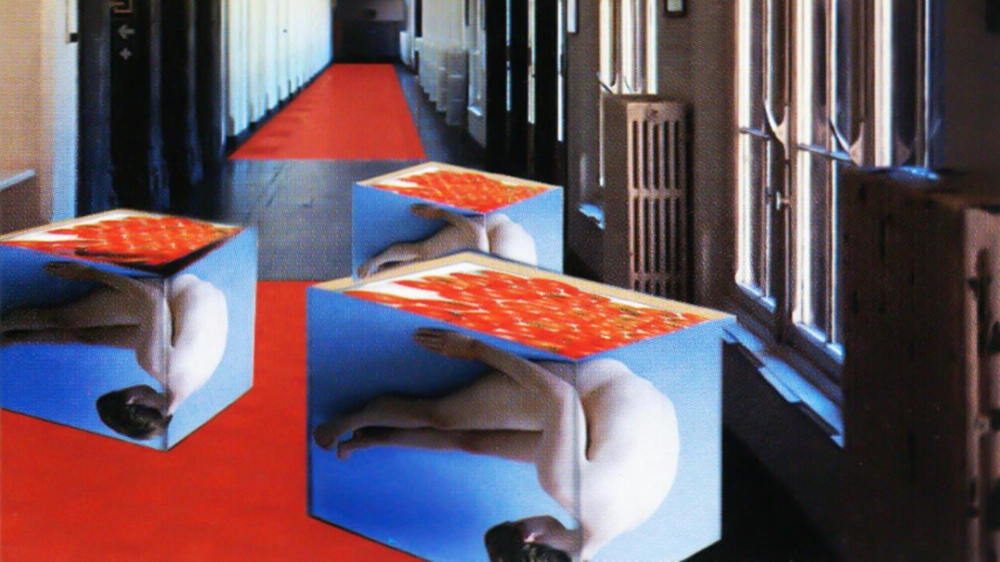
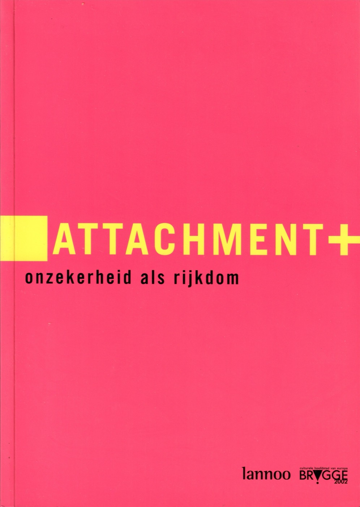

Attachment+ – Onzekerheid als rijkdom
In 2002 was Brugge Culturele Hoofdstad van Europa. In dat kader vond de tentoonstelling Attachment+ – Onzekerheid als rijkdom plaats. Met werk van tientallen kunstenaars uit binnen- en buitenland, onder wie Panamarenko, Jef Geys, Guillaume Bijl, Leo Copers en Marijke van Warmerdam, bood de tentoonstelling een internationale kijk op de hedendaagse kunst. De werken waren afkomstig uit privécollecties en waren vaak nog niet eerder voor een breed publiek te zien geweest.
Centraal stond de manier waarop kunstenaars omgaan met een wereld die voortdurend verandert. Thema’s als onzekerheid, transformatie, twijfel en vergankelijkheid kwamen aan bod in installaties, sculpturen, foto’s en videowerken. De bijbehorende publicatie ging verder dan een klassieke tentoonstellingscatalogus: naast de getoonde werken werden ook de kunstenaars en hun bredere oeuvre belicht.
Voor mij heeft Attachment+ een bijzondere betekenis. Als pas afgestudeerde historicus was het mijn allereerste professionele werkervaring. Ik kwam meteen terecht in de wereld van de hedendaagse kunst en kreeg de kans om als coauteur een inhoudelijke bijdrage te leveren aan een omvangrijke publicatie voor een internationaal kunstproject. Het was een onverwachte en bijzonder boeiende kennismaking met een wereld die ook in mijn latere werk een belangrijke plaats zou blijven innemen.
